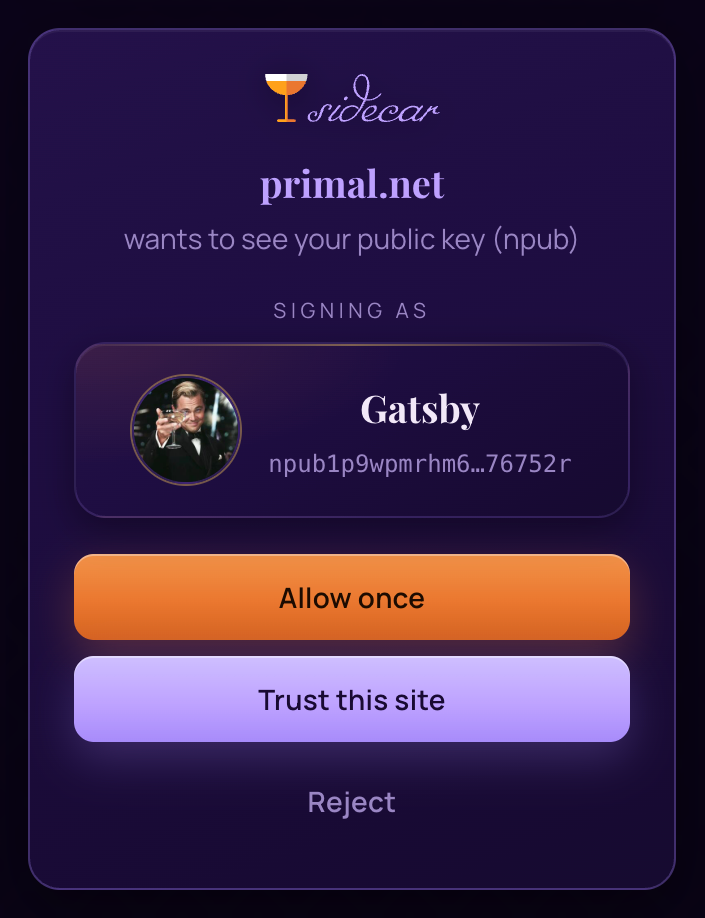
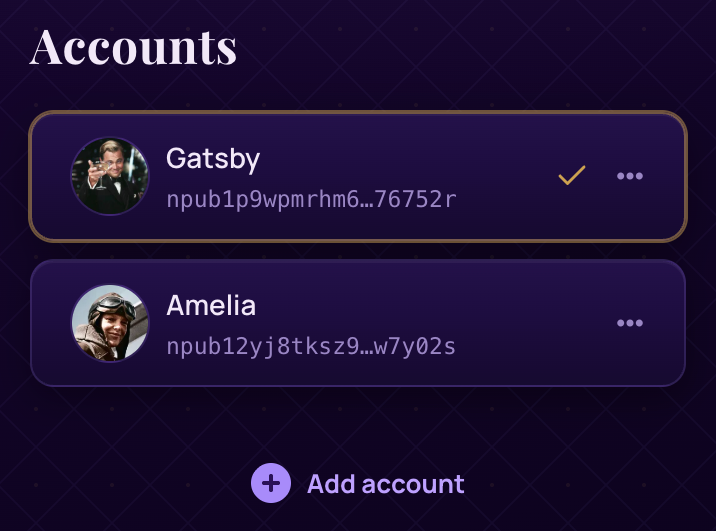
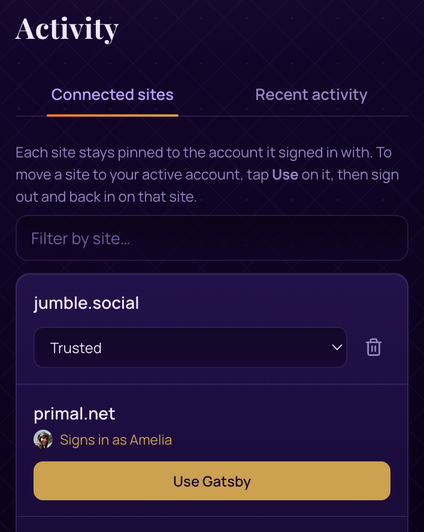
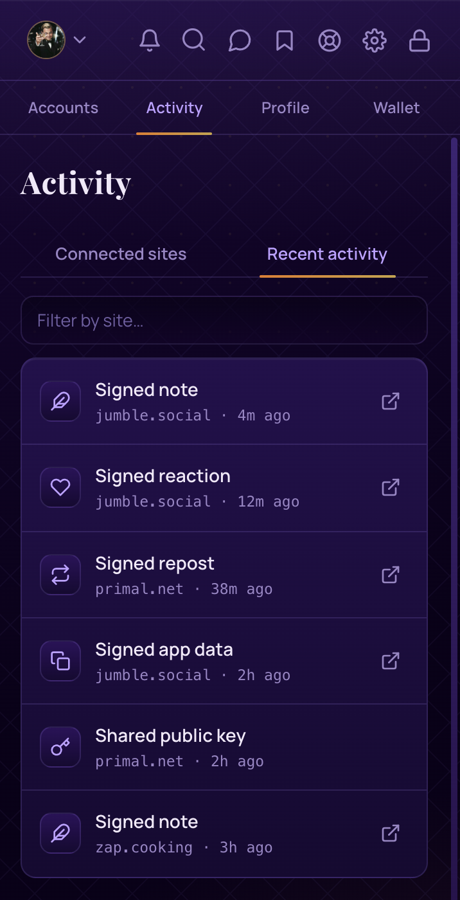
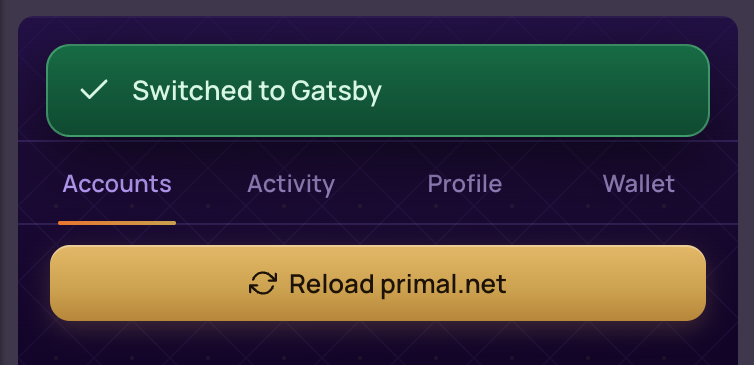
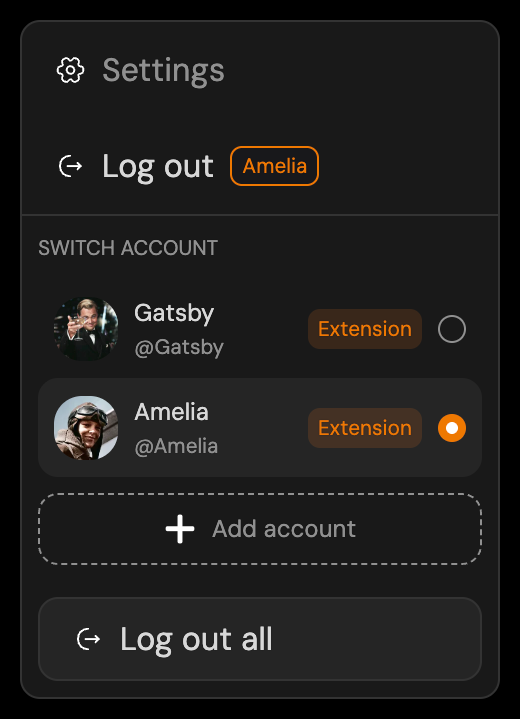

A short guide to signing in, keeping several accounts, and understanding why different Nostr apps handle account switching differently.
Sidecar is a signer. It keeps your Nostr keys safe in the browser's side panel and signs things on your behalf. When a website wants you to log in, publish a note, or decrypt a message, it doesn't get your key. It asks Sidecar, Sidecar asks you, and if you approve, Sidecar hands back a signature. Your keys never leave the extension.
Everything is protected by the PIN you chose when you set up Sidecar, and the panel locks itself after a period of inactivity you can adjust in Settings.

Sidecar happily holds as many accounts as you like. Generate a fresh one or import an existing nsec from the Accounts tab. One account is always the active account, marked with a checkmark on the Accounts tab. Click another to switch.
The active account is the one Sidecar offers when you sign in somewhere new, and the one used when you post from Sidecar's own composer. Think of it as the account currently "at the wheel."

Here's the part worth reading twice. When you sign in on a site, that site pairs with the account you signed in as. From then on, the site keeps signing with that account, even if you switch the active account in Sidecar's panel.
That's deliberate. If you're signed in to a site in one tab and switch accounts in Sidecar to do something else, you would not want that open session to quietly start posting as someone else. Pairing keeps every session honest: each site stays the identity it logged in with until you log it out.
You can see every pairing in the Activity tab, under Connected sites. Each site shows the account it's pinned to, along with its permission level and recent signing history.


A site stays paired with the account it logged in with, so how you switch it to a different account depends on how that app handles users — and apps differ:
Some update the signed-in user when you reload. Switch accounts in Sidecar, refresh the page, and the app follows along.
Others keep their own multi-user switcher. You add each account to the app once, then flip between them inside the app — a refresh won't change who's signed in.
So logging out isn't always necessary. What matters is recognizing which kind of app you're in — the next section breaks down the two families. When a switch does call for a fresh login, the routine is the same everywhere: log out on the site, switch accounts in Sidecar, then log back in.
The shortcut. Whenever you switch the active account and a paired site is open in the current tab, Sidecar offers a Reload [site] button. For apps that re-check the extension on load, that single click usually does it.
A rule of thumb
The site decides who is signed in. Sidecar decides who signs in next.
Nostr apps fall into two families, and knowing which one you're in explains almost every "why am I still posting as the wrong account?" moment.
Primal, Iris, Snort, Zap Cooking, and most others
These apps have a single signed-in user: whoever the extension provided at login. There's no account menu inside the app, so the identity changes only when the login changes.
To switch, switch accounts in Sidecar and use the Reload [site] button Sidecar offers right after. These apps ask the extension again when the page loads, so that reload re-pairs them with your newly active account. If a reload doesn't do it, the full log out and log back in routine always will.

Jumble, YakiHonne, noStrudel, Coracle
These clients keep their own list of accounts with a switcher inside the app. Each entry in that list is bound to the Sidecar account that was active when you added it. The client's switcher and Sidecar's switcher are two separate things: flipping one does not flip the other, and refreshing the page won't change the user, because the client remembers its own selection.
To get a second identity into the client's list: switch accounts in Sidecar first, then use the client's "add account" option and choose the browser extension method. Once each account is added and approved, you can hop between them using the client's own switcher.
A safety net. Because these clients can show one account while signing as another, Sidecar watches for the mismatch: once a site has signed in with more than one of your accounts, every post asks you to confirm who's signing, with a Multiple accounts used note on the prompt. So even when the client's switcher and Sidecar disagree, you catch it before anything publishes as the wrong you.
Background syncs are the exception. As you browse, clients quietly save app settings — read status, feed preferences, and the like. These aren't posts: nobody sees them in a feed, and they're harmless to write under either account. So Sidecar handles them for you rather than interrupting every few seconds to ask who's syncing. If you'd rather confirm each one, turn on Confirm background app-data syncs in Settings.

A pleasant detail: some clients, noStrudel among them, tell Sidecar exactly which account they expect on every signature. When Sidecar holds that account and it has approved the site, Sidecar signs with it automatically. In those clients, switching inside the app works seamlessly once each account has been added.
Sidecar's Wallet tab connects to a Lightning wallet you already have, using Nostr Wallet Connect. Sidecar never holds your funds; it just gives you balance, payments, and zaps right in the panel. Each account can have its own wallet connection.
If you don't have a wallet that speaks NWC yet, the wallet directory below has good options for every taste, custodial to self-custodial.
Version 1.4.1
Version 1.4.0
The full history, including earlier releases, is in the changelog on GitHub.
A directory of apps that work with Sidecar. Social, media, reading, commerce, and more.
OPEN THE DIRECTORY →Wallets that support Nostr Wallet Connect, ready to pair with Sidecar's Wallet tab.
BROWSE WALLETS →A friendly introduction to the protocol itself: keys, relays, zaps, and the rest.
START HERE →Found something confusing, or something this guide should cover? Tell us on GitHub.
OPEN AN ISSUE →